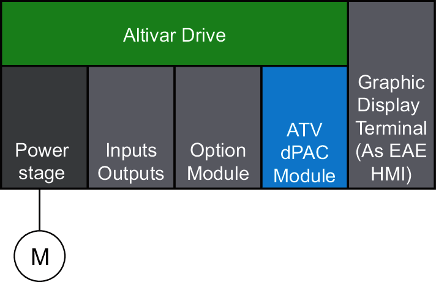
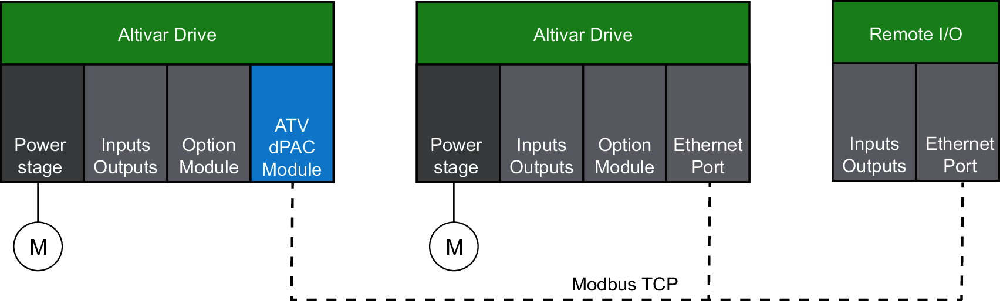
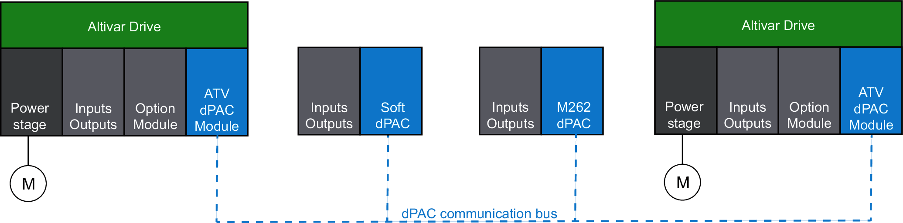

The ATV Distributed PAC is a control system that offers a scalable solution with optimized configurations and an expandable architecture.
The following figure defines the local architecture configuration:

The ATV Distributed PAC can be used as a standalone controller, providing an optimized local configuration, using a combination of the following:
ATV Distributed PAC module, running the process application.
Altivar Variable Speed Drive, controlling the motor.
Inputs and outputs embedded in the drive, to connect sensors and control external devices.
Inputs and outputs option modules, to extend the I/O capacity.
Encoders interfaces option modules, for speed or position control.
Altivar Graphic Display Terminal, to display and set process application data.
Communication services can also be used for system-level integration (OPC UA server, Modbus server, …).
VW3A3203 extended I/O module.
VW3A3204 extended relay module.
VW3A3420 (digital), VW3A3422 (analog), VW3A3423 (resolver) and VW3A3424 (HTL) option encoder interface modules.
ATV 340 embedded encoder (on drives with power equal to or lower than 22 kW).
The following figure defines the remote architecture configuration:

The ATV Distributed PAC can control remote Modbus TCP devices, using a combination of the following:
ATV Distributed PAC module (Modbus TCP client, controlling other devices listed below).
Altivar drives via Ethernet port (Modbus TCP server, without ATV dPACmodule).
Distributed I/O, such as Advantys STB Digital I/O modules or TM3 Bus Coupler for I/O modules.
Other Modbus TCP server devices.
Communication services can also be used for system-level integration, such as:
OPC Unified Architecture Server (OPC UA Server), to interface the process application with SCADA Systems.
Modbus server, to control the process application running in the ATV Distributed PAC over Modbus TCP.
The following figure defines the distributed architecture configuration:

The ATV Distributed PAC can be integrated in a distributed architecture, running a part of the process application, and natively exchanging data through the EcoStruxure Automation Expert bus connection. It can be used in combination with the following controllers:
ATV Distributed PAC
M251 Distributed PAC
M262 Distributed PAC
M580 Distributed PAC
Soft Distributed PAC (for example, running on server).
While integrated in a distributed architecture, the ATV dPAC can still leverage its integrated and optional I/Os, Modbus TCP devices control capability, and other communication services, to provide maximum flexibility.
The maximum configuration supported is:
Local: The control block (the part of the drive controlling the motor) and all embedded inputs/outputs of the drive.
Remote: Supports up to 7 Modbus TCP server devices.
Distributed: Supports up to 16 (ATV Distributed PAC, M251 Distributed PAC, M580 Distributed PAC or soft Distributed PAC).
ATV340 embedded encoder (available on drives with power equal to or lower than 22 kW),
VW3A3420, VW3A3422, VW3A3423 and VW3A3424 option encoder interface modules (digital, analog, resolver and HTL),
VW3A3203 extended I/O module,
VW3A3204 extended relay module.
The maximum configuration depends on OPC UA services activation, Bus Cycle Time, usage of EcoStruxure Automation Expert libraries, and other services. Use the light Hardware CAT for designing maximum configuration.
The configuration with Altivar drives in remote architecture is done with SoMove using pre-configured .psx files (one for each drive family). For more information refer to SE.FieldDevice online help.
In some environments, a maximum configuration populated by high consumption modules and the maximum distance allowable between the devices may lead to bus communication errors, despite being allowed by the EcoStruxure Automation Expert software. In such cases, it's important to analyze the power consumption of the modules chosen for your configuration and the minimum cable distance required by your application, and possibly seek to optimize your choices.
The maximum configuration supported by ATV Distributed PAC depends on the combination of application logic and services used. In general, it is advised to keep the controller CPU load below 60%.
The maximum configuration described below is an example of a combination of functions and services. The ATV Distributed PAC CPU load remains below the 60% limit, with all the following services running simultaneously:
Altivar I/Os:
Embedded IO (DI x 8 & DO x 1 & AI x 3 & AO x 2).
Extended IO module (DI x 6 & AI x 2).
Bus cycle time = 50 ms.
30% data changing every 50 ms.
Reliable Cross-Communication:
200 INT.
100% data changing every 100 ms.
Modbus TCP Client:
6 devices controlled x 28 variables (20 WORD IN & 8 WORD OUT).
Bus cycle time = 80 ms.
35% data changing every 200 ms.
Modbus TCP Server:
1 master connection (50 WORD).
Bus cycle time = 250 ms.
50% data changing every 250 ms.
HMI:
100 variables (50 INT & 50 BOOL).
100% data changing every 100 ms.
OPC-UA server:
2000 OPC UA Tags (variables).
100% data changing every 500 ms.
Archiving:
50 INT.
100% data changing every 500 ms.
The maximum configuration depends on application logic complexity, Bus Cycle times, usage of EcoStruxureAutomation Expert libraries, OPC UA services activation and other services. ATVSpeedControl‘light’ Hardware CATs may be used when designing large or CPU-intensive applications.
The I/O scanner configuration of the Altivardrives in remote architecture should bedone with SoMove, using the ‘dPAC’ I/O scanner profile. For more information refer to SE.FieldDeviceonline help.